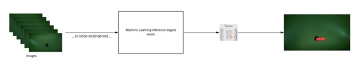
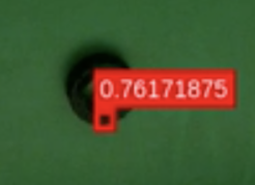

This tool allows to perform machine learning / deep learning algorithm inference in real time on images data source.
This tool is a piece of software design that have to be loaded on a board containing an FPGA (Xilinx VU9P for example) and a QSFP+ network interface.
Honir is an IP core responsible of performing machine learning inference. Thanks to a loaded quantized machine learning model converted with keras2tool (produced in task 5.3), this module consumes images coming from Lodur tool (produced in task 4.4 too) and produces the tensor results in a stream enhanced with metadata.
The advantages of this tool are:
Real time computing thanks to FPGA platform that allows high parallelism computing
Performance / Watt better than usual machine learning platform (CPUs, GPUs)
Industrial components thanks to FPGA and electronic boards build for constraints environments
A machine learning model was generated with the VHDL implementation of the layers. This machine learning model correspond to a demonstration that is used for Scortex demonstration purposes that allows defect detection on parts fundable in the market, like bricks parts, electrical switch parts and some handles.
This topology allows the inference of up to 100 images per seconds with a resolution of 1920x1200. That represent a huge amount of compute that is done in an efficient way with less than 10 milliseconds of latency
Images are provided in a convenient format by the Lodur tool (“frame grabber”, produced in task 4.4). Inference is ran on images by Honir and the results produced allow to draw a red box around the defect and also provide a confidence of detection in the source image. The following image shows a zoom on the part and the localization of the defect.
To ease the use of Honir, we included it in our demonstrator to allow live stream of images and live detections.

This image represents the Scortex interface that shows a part moving under the camera with a Machine learning detection at 100 FPS.
At a system level:
IN : video stream (provided by Lodur)
OUT : prediction matrix / tensor
At a user level:
IN : video stream
OUT : results of machine learning inference in a matrix or shown in live on images
This module takes input images that are sent by the frame grabber Lodur (see decicated component).
This module is configured based on a keras2RTL tool conversion. Indeed, the user first design a keras model, then use the keras2RLTconvertor, and then can use Honir for inference with this model.